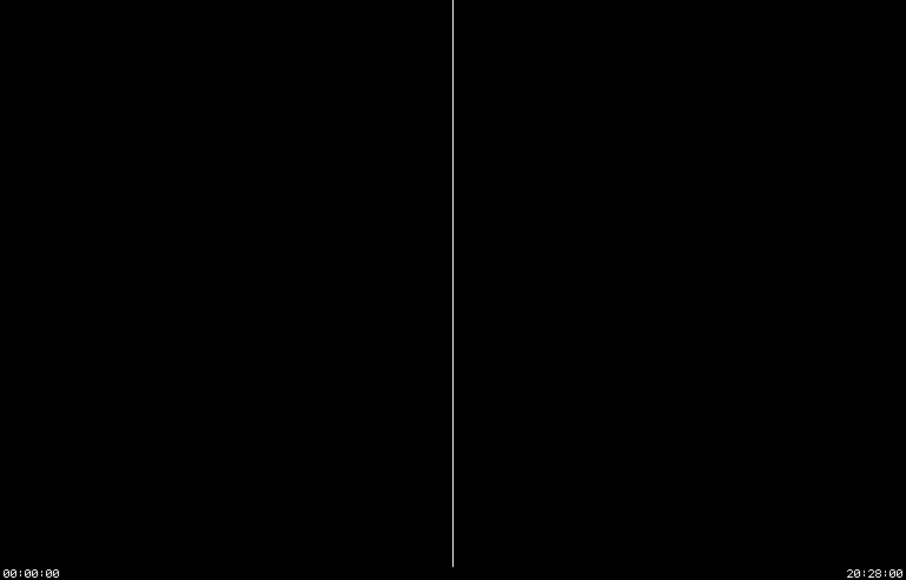

muir · the recording · the front page

This is the recording itself, at the size the machines drew it, which is the size to read the screens at. Two machines on one canvas: 768 by 963 each, with a two-pixel rule between them, and the line below the screens carrying the machine’s own time at the left and the wall clock at the right. The frames are timed by the machine’s clock, so it plays at the machine’s speed.
The debugger is at the left. It boots the band, logs in, and loads the console program CC from the Chaosnet, file by file — CC is not in the band, so it has to come over the network, the way it would have on a real machine. It then seizes the machine at the right through the debug cable and runs MIT’s own test of it.
The machine at the right is where the acceptance test is won or lost. It boots a band of its own — it has a Chaosnet of its own to take the time from, and comes up to a Lisp listener the same way the left one does — and then it goes still the moment CC halts it, and never moves again. That freeze is the signal: from then on nothing of that machine’s own software is running, and every register and bus cycle the diagnostic reads is being driven through the cable by the other machine.